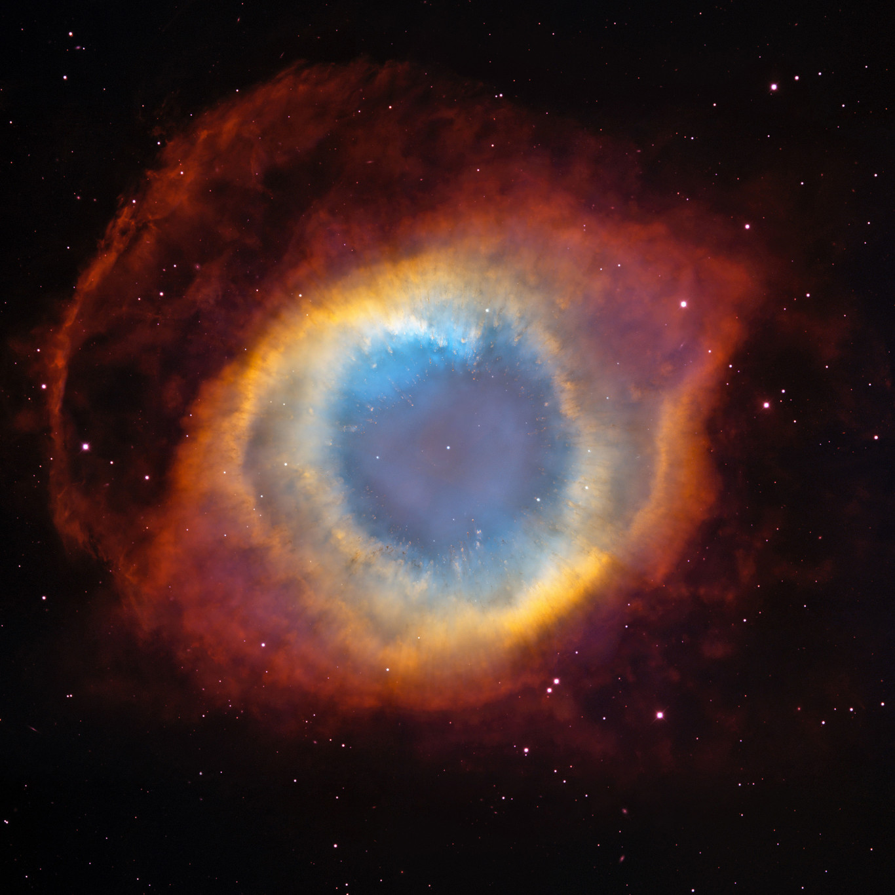

Estrellas
Siempre que vemos hacia arriba al firmamento podemos ver las estrellas, aquellas nos han guiado durante miles de años, atravesando mares y desiertos, nos ha fascinado su brillo en las noches oscuras, sin embargo, ¿Sabes que son las estrellas?
leer mas...

planetas
hace siglos se creia los planetas solo eran estrellas errantes...
leer mas...
satelites
Todas las noches sale a relucir nuestro hermoso satelite natural, la Luna.
leer mas...

galaxia
Las galaxias es el hogar que alberga muchos sistemas como el nuestro.
leer mas...
cumulos
Un conjunto de estrellas atraidas entre si, mientras mas fuerte es su atraccion su forma globular es mas acentuada, no asi con las que se atraen menos que consiguen formas mas irregulares.
leer mas...
asteroides, meteroides, meteoros, cometas y meteoritos
Sabes tu que es una estrella fugaz? te podemos decir con seguridad que es un estrella, entonces que es?
leer mas...

nebulosas
una nebulosa es muchas cosas, pero de todas lo mas impresionante es saber que es donde nacen las estrellas o por el contrario... es la estela que deja una estrella al morir.
leer mas...